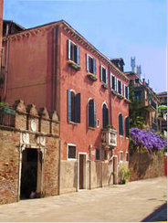

Low cost romantic venice
Our Bed and Breakfast is located in a typical Venetian area, on the second floor of a Venetian palace, with private entrance and canal view, close to San Marco Square.
The neighbourhood is very beautiful and characteristic, the house is just a footstep away from the most important monuments, churches and shops, with restaurants, pizzerias and bars around the corner.
Take a look at our comfortable and elegant rooms. Each bedroom has a seating area and balcony overlooking the canal.
Enjoy your breakfast in our lovely garden and let our gondel take you on a romantic tour in the canals. Visit the islands Murano, Burano, Torcello and Lido, the boats are just 5 minutes by foot away.